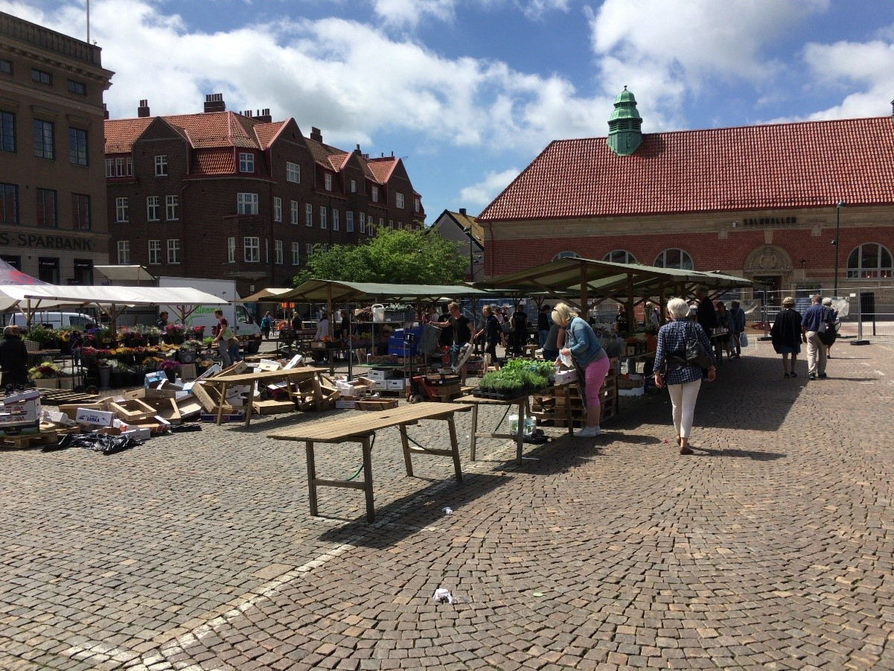
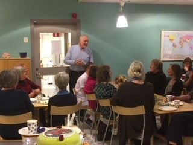
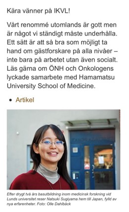

留学体験記
スウェーデン・ルンド大学留学
留学先・ラボ
スウェーデン ルンド大学
Johan教授 ＆ Lars先生の研究室
研究テーマ
HPV陽性中咽頭癌細胞株を用いた、プロテアソーム阻害剤とシスプラチンの併用療法に関する実験（in vitro & in vivo）
研究室体制
技術者2名を加えた5人体制（前立腺癌研究の院生2名が加わる時期もあり）。基礎から丁寧に学べる非常に恵まれた環境。
恵まれた環境での基礎研究と、そこにあるロマン
私は過去に4人の先生方が留学されていたラボでJohan教授とLars先生のご指導のもと研究を進めて参りました。同じラボで5人も留学生を受け入れるのは珍しいことで、ルンド大学のニュースレターにも取り上げられました（写真③）。
私たちの研究グループは技術者の方２人が加わった5人体制でしたが、前立腺癌の研究をしていた院生2人が加わって7人になることもありました。技術者の方は2人ともベテランなので、基礎研究の経験がない私にとってはいつでも何でも聞ける環境下にあり大変恵まれていました。
私が行っていた研究は、数年前にこのラボで樹立されたHPV陽性の中咽頭癌細胞株を用いて、血液内科では既に臨床使用されているプロテアソーム阻害剤と既存のシスプラチンとの併用療法の効果を確かめる実験でした。このHPV陽性癌細胞株はマウスモデルもあり、他のグループと共同で in vivo の実験にも参加させていただきました。
「臨床ではガイドラインや経験を基に治療を検討していくため、ある程度の道筋がありますが、基礎研究ではまだ解明されていない部分を探求していくため想定していた結果と異なる結果が出る事の方が多く、その度に試行錯誤して実験を繰り返すという臨床とはまた違った難しさがあると感じました。ただ、臨床で用いられている治療はどれも基礎研究を介して確立されてきたもので、『将来的にもしかしたら自分の研究が患者さんの役に立つかもしれない』というロマンがあると思います。」
2年間の留学生活を通して良い先生と仲間に出会い、恵まれた環境下で研究という新たな世界を経験できた事は私の宝物になりました。今後の医師人生にも活かしていけたらと思っております。
このような貴重な機会をいただいた浜松医科大学耳鼻咽喉科・頭頸部外科の先生方には大変感謝しております。またこの留学記が後進の先生方の将来を考える一助となれば幸いです。
他の留学体験記を読む
アメリカ・ミシガン大学へ留学し、唾液腺癌（腺様嚢胞癌）の癌幹細胞を標的とした治療研究に取り組まれた佐原聡甫先生の体験記です。
ルンドでの生活と研究風景
写真をクリックすると拡大表示します。
写真①-a：大聖堂

写真①-b：週末限定の市場（中央広場）

写真②：Kampradhusetの食堂で祝賀会

写真③：ニュースレター